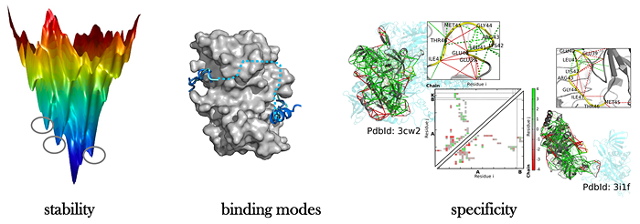
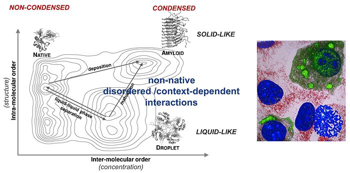

|
Lectures on Youtube
Anything new about protein interactions?

How our understanding of protein interactions has been changed? The lecture describes the recent developments in concepts, as well as those modern views in past, which were largely abandoned.
The generic nature of the condensed state of proteins

The lecture describes the fundamental nature of the condensed state of proteins. It explains why it is a physical necessity of forming liquid-like droplets by perhaps all proteins and how we can decipher the underlying, generic interaction motifs.
Fuzziness in protein adaptation
The lecture describes molecular mechanisms of fuzziness, cellular context-dependence of proteins. The lecture demonstrates that fuzziness can be engineered to modulate cellular processes, such as cell differentiation or innate immune response.
Henry Stewart talk lecture (accredited by ACCME)
Fuzzy protein theory for disordered proteins
The lecture explains the analogy between AI control and regulation of cellular processes, achieved through fuzzy interactions.
|